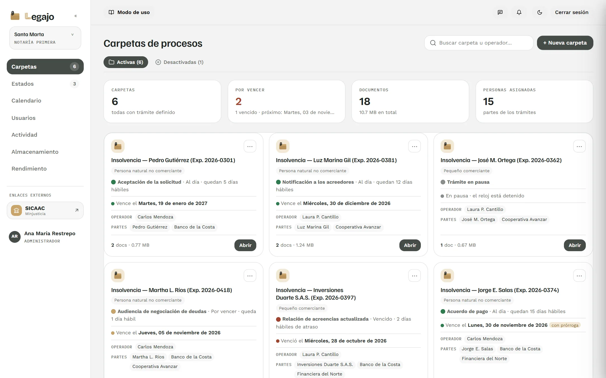
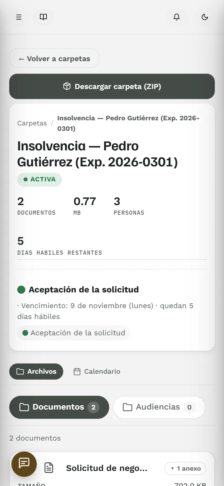
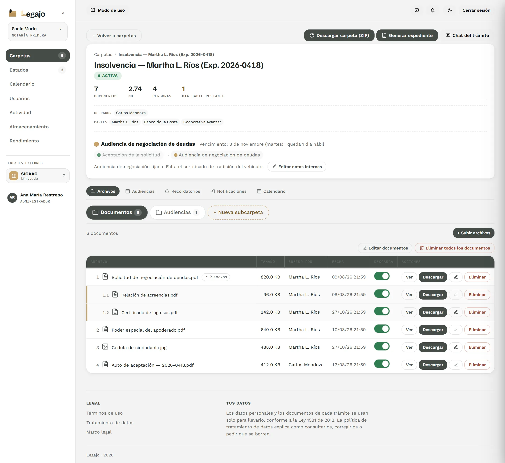
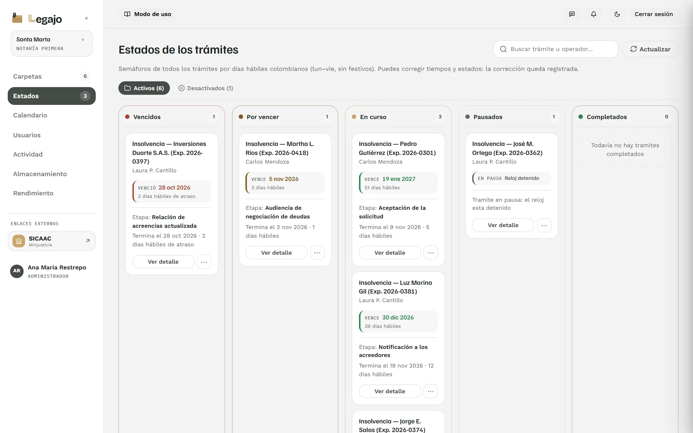
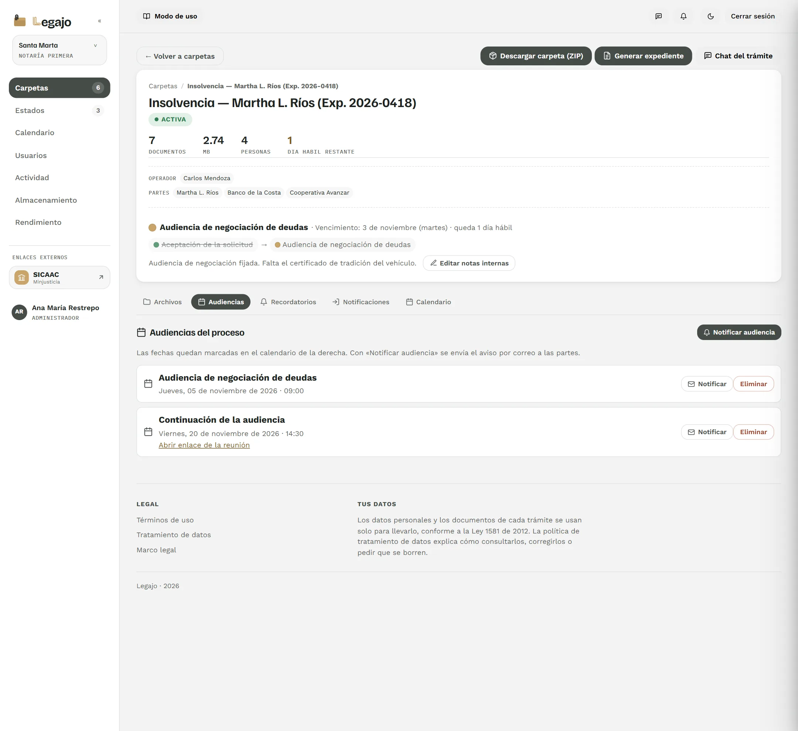
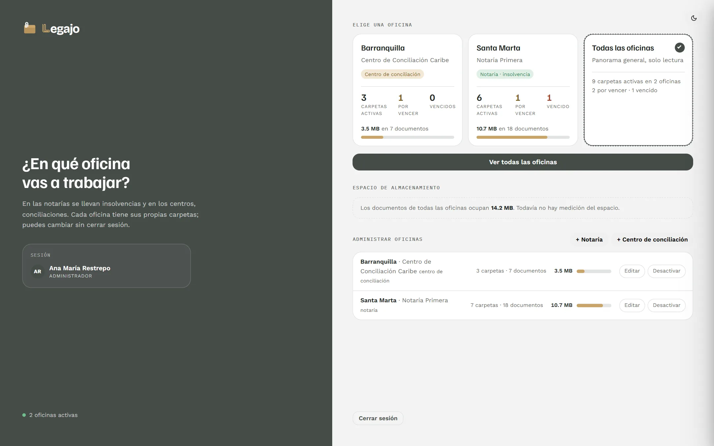

Chat por trámite
Cada carpeta conversa por separado con el cliente y con los acreedores.
Insolvencia · Conciliación
Portal documental para notarías y centros de conciliación: expedientes, plazos y audiencias en un solo lugar.


Video · 75 segundos
Oficinas, carpetas, documentos, plazos, audiencias y conciliación, en el portal de verdad.
Documentos con sus anexos, subcarpetas y quién subió cada archivo. El cliente sube lo suyo y ve solo su trámite; el acreedor, solo lo que le toca.

El semáforo cuenta días hábiles colombianos, sin fines de semana ni festivos. Avisa a cuatro, tres, dos y una semana, un día antes y el mismo día.

La fecha queda en el calendario y el aviso sale por correo a cada parte. La constancia de notificación se descarga en PDF.

Cada carpeta conversa por separado con el cliente y con los acreedores.
Los documentos que elijas, en el orden que elijas, unidos y numerados.
Todo el legajo con sus subcarpetas, en una sola descarga.
Documentos nuevos, plazos y mensajes llegan a la campana y al teléfono.
Administrador, operador, monitor, cliente y acreedor ven solo lo que les toca.
Chat de soporte y llamada de voz sin salir del portal.
Cada oficina tiene sus carpetas. Al entrar, el portal se ajusta al trámite que lleva.

El administrador abre el proceso y asigna operador, cliente y acreedores.
El semáforo empieza a contar. Se puede pausar o aplicar la prórroga.
Fechas en el calendario y citación por correo a las partes.
Fin del trámite y un plazo para descargar los documentos.
Entre con el usuario y la contraseña que le entregaron.